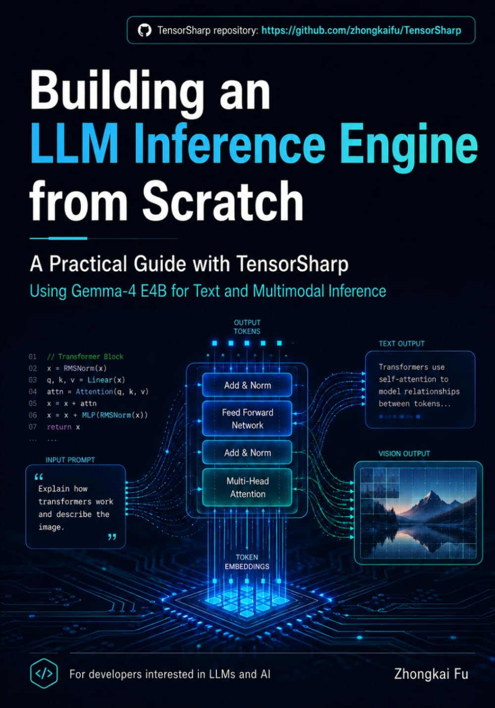

▦
1 · 让张量变得具体
从存储、形状、步幅、视图、内存分配与算子分派开始，建立后续所有模型运算依赖的小而坚实的契约。
TensorSharp 图书
从零构建多模态 LLM 推理引擎：以 TensorSharp 与 Gemma 4 E4B 为例
不止于调用模型 API：从承载张量的内存出发，一路追踪到流式输出下一个 token 的代码，并看清文本、图像、视频与音频如何汇入同一套实现。

全书遵循刻意设计的实现顺序：先让每一层抽象证明自己的价值，再引入下一层，因此从第一次内存分配到最终响应，整套系统始终清晰可追踪。
从存储、形状、步幅、视图、内存分配与算子分派开始，建立后续所有模型运算依赖的小而坚实的契约。
读取 GGUF 元数据与权重，理解量化，完成提示词 tokenization，并准备送入网络的数值。
追踪 Transformer 执行、logits、采样、停止条件与流式输出，直到一次底层前向计算变成可交互的回答。
跟随 Gemma 4 E4B，观察图像、视频与音频编码器如何把各自的输入投影进语言模型的 token 流。
构建易读的 CPU 参考实现，验证中间结果与最终输出，在优化之前先获得可信的正确性基线。
在不丢失原始心智模型的前提下，引入加速后端、分页 KV 缓存、连续批处理、前缀共享与推测解码。
TensorSharp 在书中不是一个黑盒。概念会直接落到推理引擎必须承担的职责：管理内存、分派算子、解码可移植模型格式、执行多模态 Transformer、选择 token，并高效地对外提供结果。
Gemma 4 E4B 让这段旅程始终锚定在同一个具体示例上。它的文本、图像、视频与音频路径，把模型加载、模态编码器、投影、Transformer 执行与输出生成之间的边界呈现在同一套系统里。
源码与参考文档的学习伴侣。 通过本书获得连贯的讲解，再回到本维基与 TensorSharp 仓库，查看最新的命令、API、架构卡片与实现细节。请注意：本书正文为英文。
从使用 AI 服务迈向理解本地推理背后的 C# 系统。
把模型架构与内存布局、执行、验证、加速和服务化连接起来。
用一套可以阅读、运行与探索的端到端实现，串起原本分散的概念。
从第一个张量，到下一个 token
沿着 TensorSharp 与 Gemma 4 E4B 的实现路径系统学习，再回到仓库时，你将能把代码读成一套完整的系统。